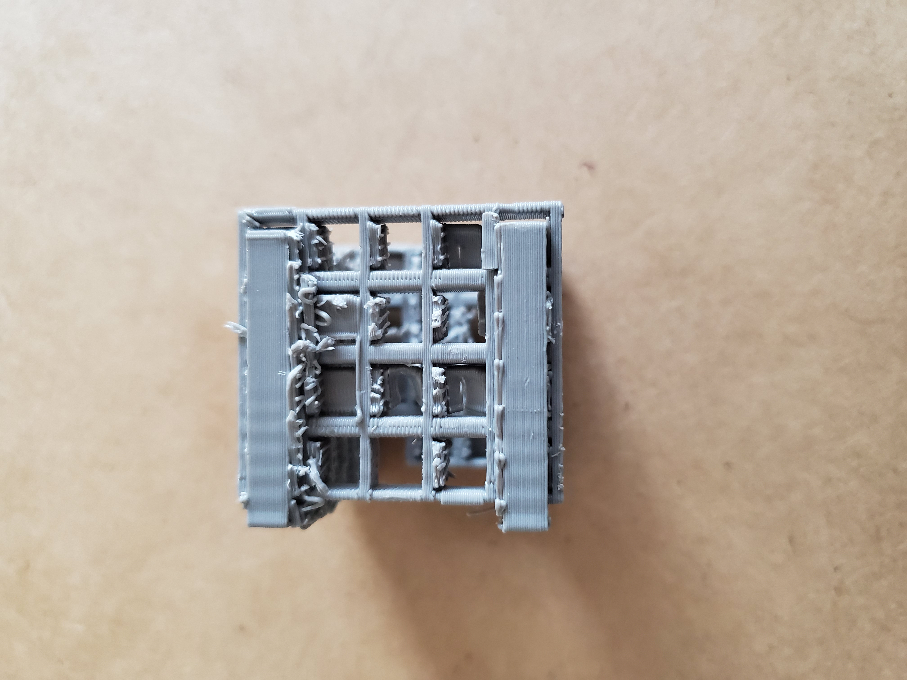
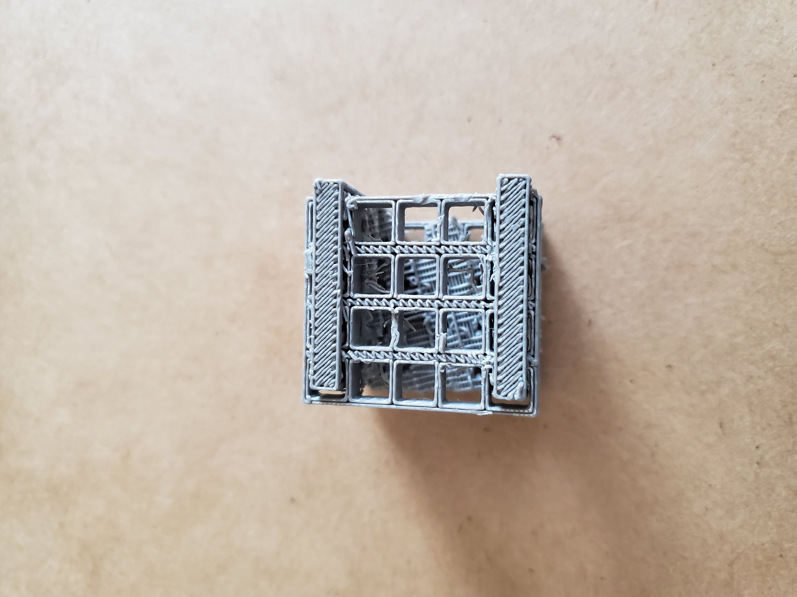
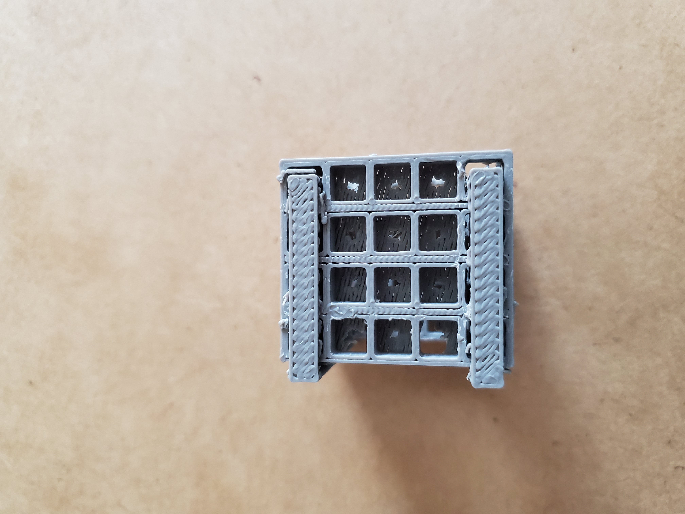
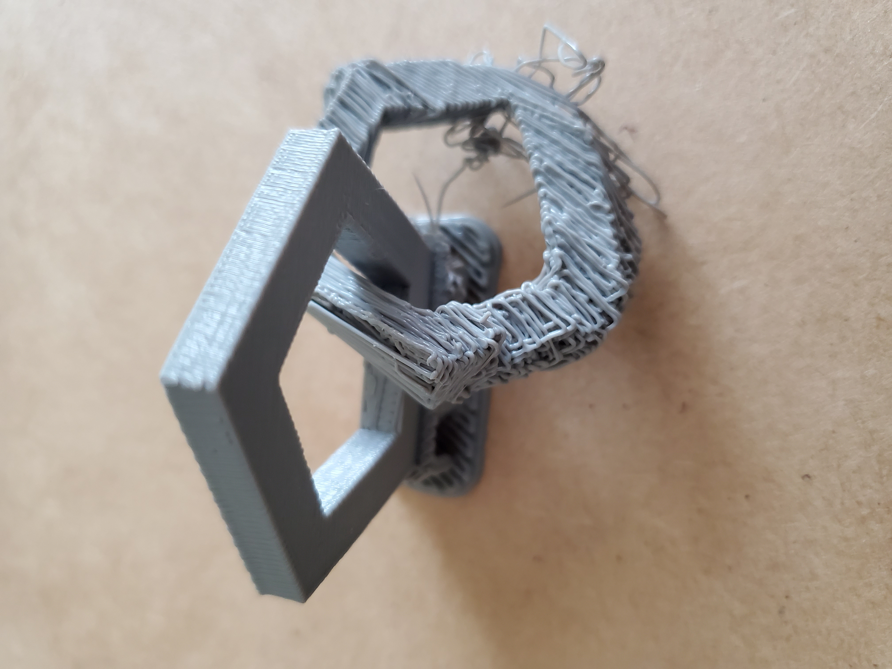
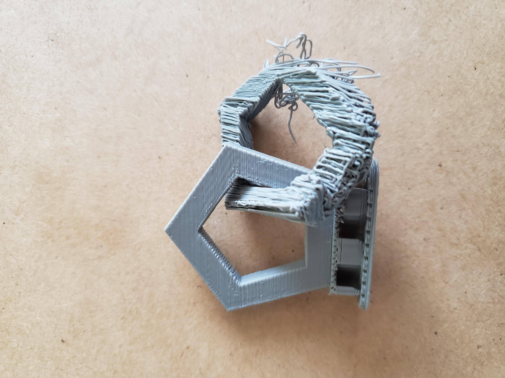
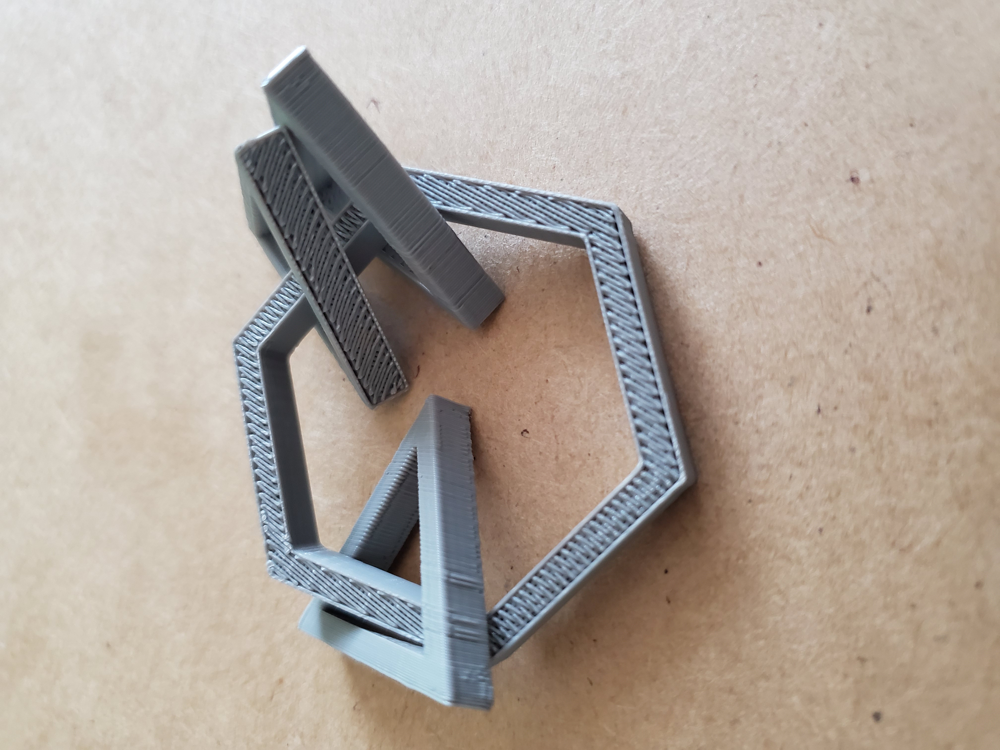
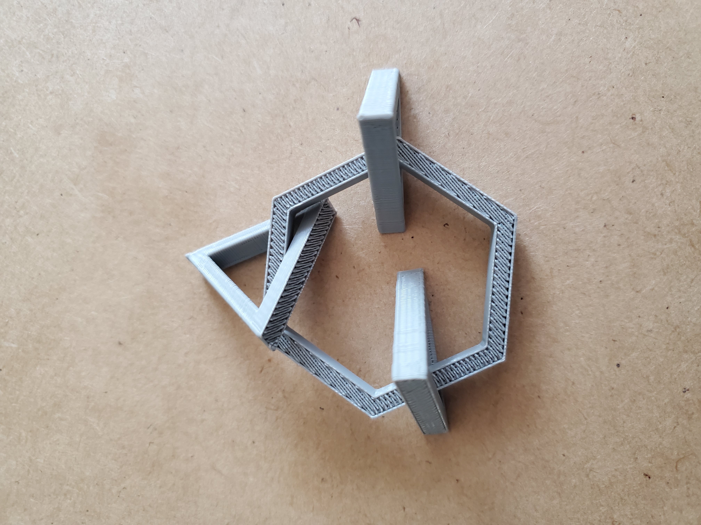

I did not account for the space I would need to cut the support off, I ended up only having about 1mm of clearance so that wasn't going to work. I needed to create enough space between the objects that I could snip off the support.
  I decided to create interlocking pentagons and angle them so a part of the shape was on the ground, with the thought process that is a small piece of the shape is touching the ground then it wouldn’t need support. The shapes ended up printing midair, which does not work.
 I took the knowledge from my two failures and created enough clearance for the support and made sure that one entire face of the shape was on the ground.
 